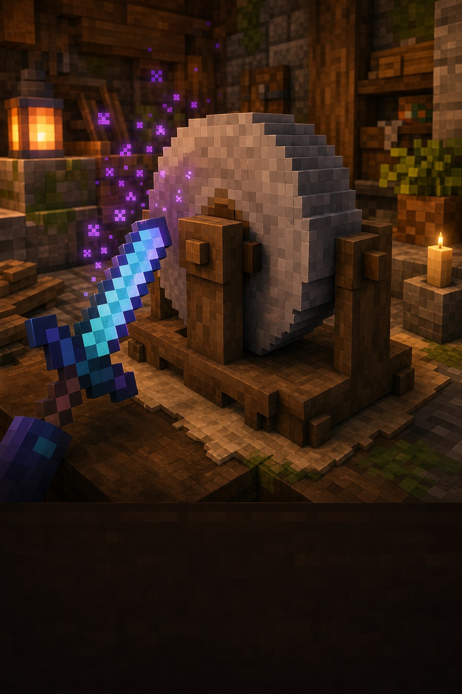

Корисне відкриття
Зроби речі крутішими
Чари можна зняти.
Річ — зберегти.
Точило прибирає звичайні чари, лагодить дві однакові речі й повертає трохи досвіду.

Навіщо воно потрібне?
Помилився з чарами або знайшов річ із непотрібним ефектом? Точило очистить предмет, щоб ти міг зачарувати його знову.
Три прості дії
Як користуватися точилом
Зняти чариЗачарована річ у верхню комірку+
Поклади зачарований предмет у будь-яку верхню комірку. Забери результат — звичайні чари зникнуть.
За зняті чари ти отримаєш трохи досвіду.
Полагодити дві речіДва однакові предмети+
Поклади дві однакові кирки, мечі або частини броні. Їхня міцність складеться в одну річ.
Звичайні чари з обох речей при цьому знімуться.
Перевір прокляттяВони не знімаються+
Прокляття точило не прибирає. Якщо після очищення лишився фіолетовий напис — це саме воно.
Очищення: як це виглядає
кирка
зайвих чарів
● Точило поверне трохи досвіду.
Підказка мандрівникові
Важливо знати
Прокляття лишаються
Точило прибирає звичайні чари, але не прокляття.
Назва зникне
Після очищення предмет повертає звичайну назву.
Не плутай з ковадлом
Ковадло додає чари, а точило їх знімає.
Маленьке завдання
Спробуй за 5 хвилин
- Постав точило поруч із ковадлом.
- Очисти непотрібно зачарований інструмент.
- Підбери досвід, який випав після очищення.
★ Бонус: спробуй полагодити дві однакові незачаровані кирки.